Recruiting Agent — AI-Powered ATS
Multi-step LLM pipeline for resume verification, role-fit scoring, and HR follow-up
- FastAPI + React SPA on a single port
- ChromaDB semantic JD matching
- Observable 9-step agent pipeline
- Optional Groq acceleration (local embeddings)
Recruiting Agent is an AI-powered Applicant Tracking System built for HR teams. It ingests job descriptions and resumes (including scanned PDFs), runs a multi-stage LLM pipeline for structured verification and role-fit scoring, flags authenticity concerns, and surfaces categorized HR follow-up questions — with a live Agent Activity timeline during processing. Part of the Agents monorepo — designed as the first of multiple AI agent projects.
What the system solves
Manual resume screening is slow, inconsistent, and weak on fraud detection for technical roles. Recruiting Agent provides an end-to-end ATS with semantic JD matching, structured verification, evidence-calibrated scoring, and an HR feedback loop — not a chatbot, but an observable multi-step agent pipeline.
Core features
| Feature | Description |
|---|---|
| JD Manager | Create/update roles; paste raw JD text → AI extracts skills, seniority, must-haves |
| Vector search | JDs chunked and embedded with Ollama → ChromaDB semantic matching |
| Resume upload | PDF, DOCX, TXT, JPG/PNG with OCR for scanned documents |
| Verification | Structured extract (education, experience, projects) + rule-based anomaly detection |
| Scoring | Technical / HR / overall fit with evidence-based strengths and gaps |
| Suspicion + HR Qs | Fraud flags and categorized verification questions with resume excerpts |
| Agent Activity | Live pipeline timeline during analysis with similarity bars and skill chips |
| Dashboard charts | Score distribution, role averages, top candidates, verification gaps |
Monorepo context
System architecture
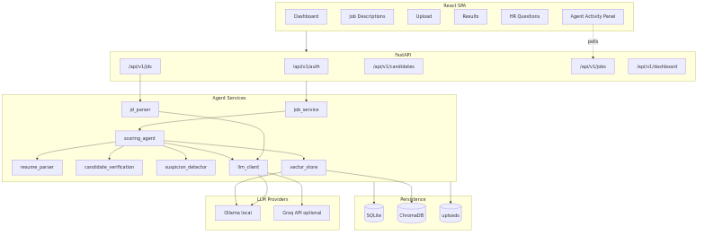
React SPA → FastAPI → agent services → SQLite/ChromaDB/uploads → Ollama (local) + Groq (optional)
Component summary
| Layer | Role |
|---|---|
| React SPA | Dashboard, JD manager, upload, results, HR questions, settings — TanStack Router + Query |
| FastAPI | JWT auth, async job endpoints, SPA static serving on port 8512 |
| job_service | Background threads, step timeline, job recovery, cancellation |
| scoring_agent | Orchestrates parse → verify → embed → search → score → suspicion → save |
| vector_store | ChromaDB HNSW index — JD chunks + skills, cosine similarity |
| llm_client | Routes chat to Groq when key set, else Ollama; embeddings always local |
| SQLite | Candidates, JDs, analysis results, processing jobs, HR questions |
Data model
job_descriptions+jd_versions— role definitions with versioned contentcandidates— raw text, structured/verification JSON, parse methodanalysis_results— per candidate × JD scores, suspicion, similarityhr_questions— categorized questions with resume excerpts and HR answersprocessing_jobs— step timeline +viz_jsonfor live Agent Activity UIuser_settings— per-user Groq API key (optional)
LLM routing
Middleware resolves Groq API key per request (header, saved settings, or local file).
Chat inference uses Groq when a key is available, otherwise Ollama.
Embeddings always run on local Ollama (nomic-embed-text) — even when Groq accelerates scoring.
Resume analysis pipeline
Upload → parse → normalize → verify → embed → search → score → suspicion → save → HR questions
Pipeline steps
| Step | Label | What happens |
|---|---|---|
receive | Receive file | Store upload, create processing job record |
parse | Parse resume | Extract text from PDF/DOCX/image; OCR for low-text scans |
normalize | Structure text | LLM normalization when unstructured |
verify | Verify education & experience | Structured LLM extract + rule-based anomaly checks |
embed | Embed vectors | Ollama embeddings for resume text |
search | Search matching roles | ChromaDB top-K JD similarity (default K=3) |
score | LLM role scoring | Technical / HR / overall fit with evidence |
suspicion | Suspicion analysis | 0–100 authenticity score + HR questions |
save | Save results | Persist candidate, scores, questions to SQLite |
Other async job types
| Job type | Steps | Trigger |
|---|---|---|
jd_parse | receive → llm → done | POST /api/v1/jds/parse-async |
jd_index | chunk → embed → index → done | POST /api/v1/jds/{id}/index-async |
hr_reassess | collect → llm_reassess → update → done | POST /api/v1/candidates/{id}/reassess-suspicion |
HR verification loop
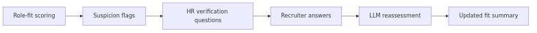
Suspicion flags → categorized HR questions → recruiter answers → LLM reassessment → updated fit summary
Live Agent Activity
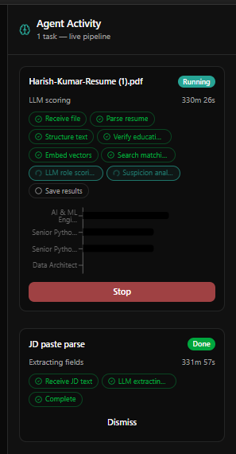
Frontend polls GET /api/v1/jobs every 1.5s via TanStack Query — step timeline updates with similarity bars and skill chips from viz_snapshots
Dashboard
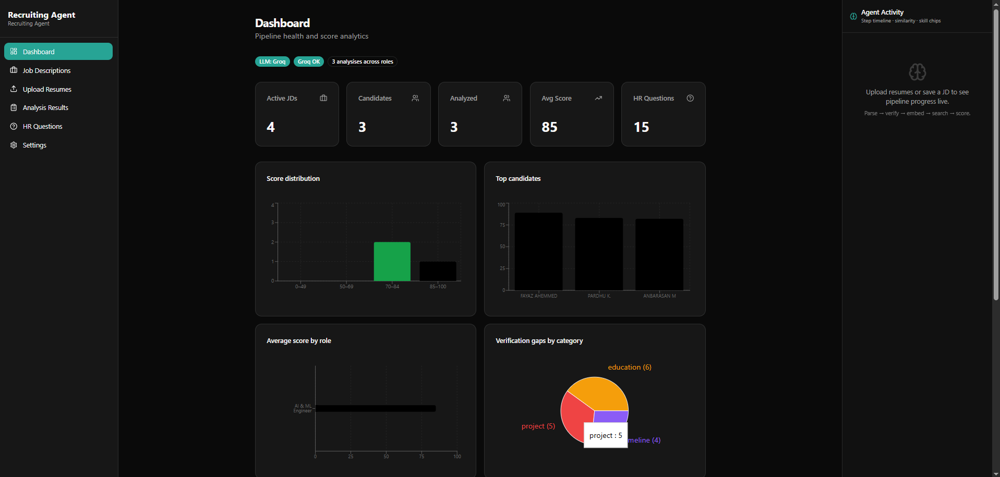
Pipeline health, score distribution, and top candidates at a glance
Job descriptions
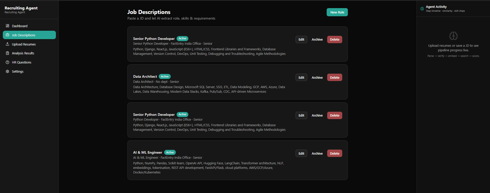
Create roles, paste JD text, and index skills for vector search
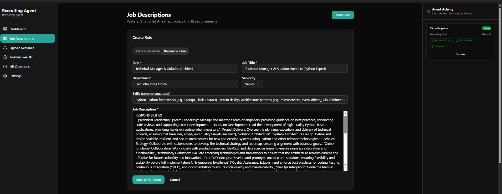
LLM extracts structured fields — skills, seniority, must-haves — from raw JD text
Resume upload
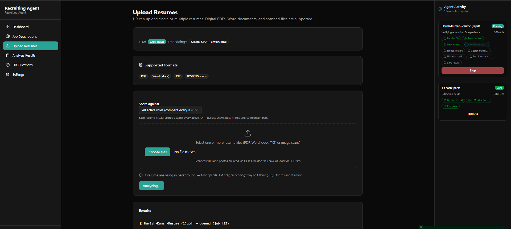
Bulk upload with optional target role; supports PDF, DOCX, scans, and images
Analysis results
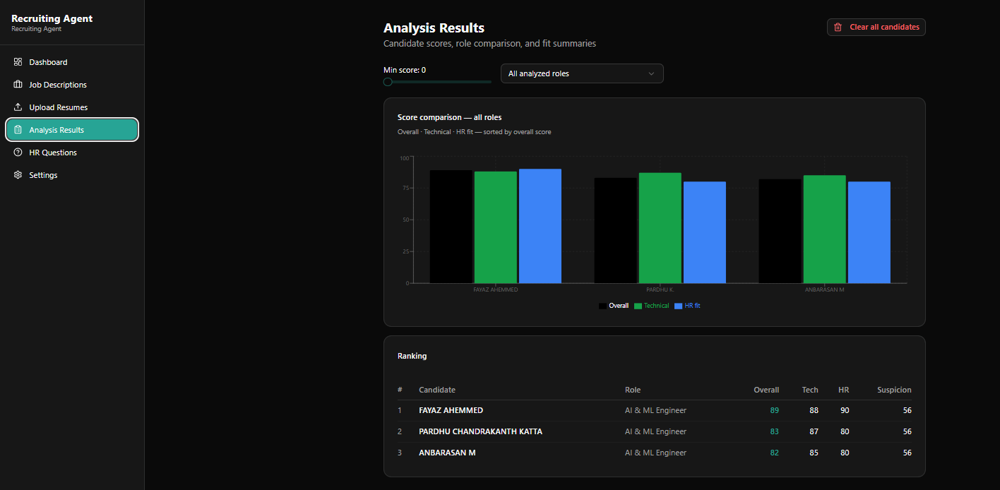
Per-candidate scores, role suitability comparison, verification gaps, and ranking
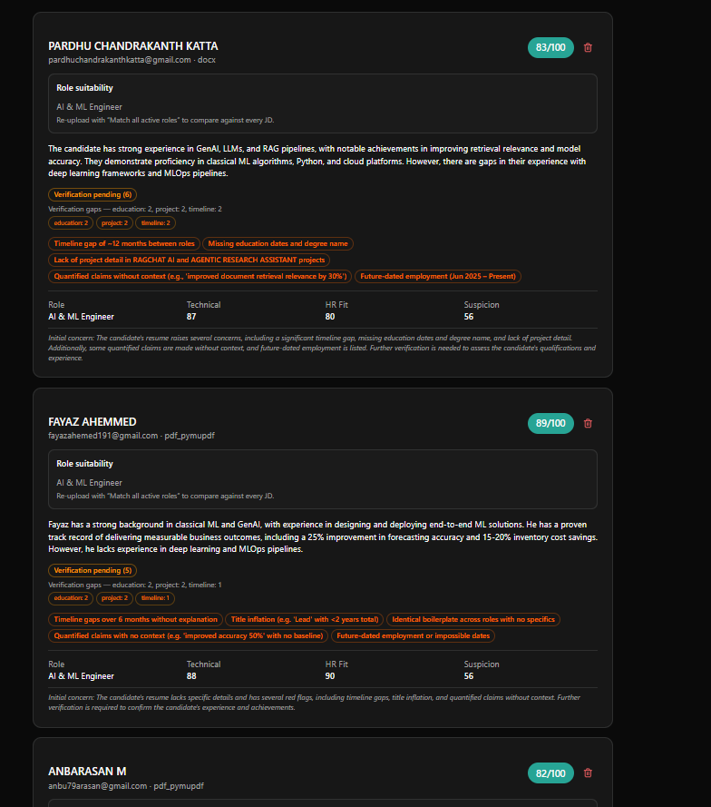
Detailed verification gaps and suspicion evidence tied to resume excerpts
HR questions
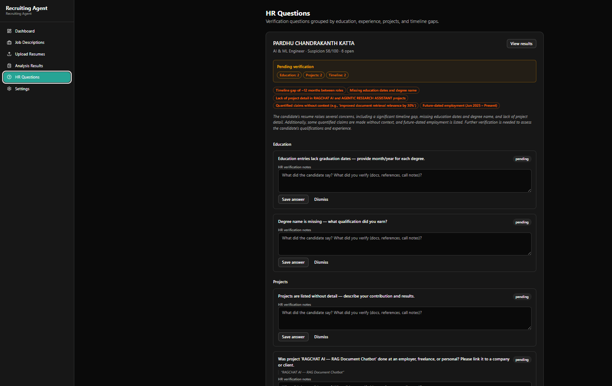
Categorized verification questions with resume excerpts for recruiter follow-up
Settings
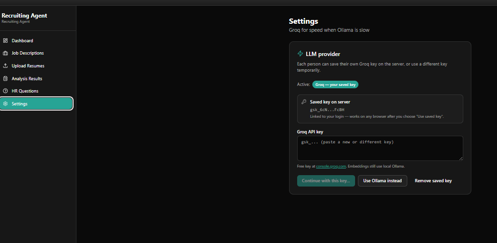
Optional Groq API key for faster LLM scoring — embeddings stay on local Ollama
Key services
| Service | Responsibility |
|---|---|
scoring_agent.py | End-to-end resume analysis orchestration and result persistence |
resume_parser.py | Multi-format parsing, OCR for scans, LLM normalization |
candidate_verification.py | Structured extract + timeline gap / missing section rules |
suspicion_detector.py | LLM authenticity scoring with evidence-tied HR questions |
suspicion_reassessment.py | Re-evaluate suspicion after HR answers |
vector_store.py | ChromaDB chunking, embedding, and top-K JD search |
jd_parser.py | LLM extraction of skills and requirements from raw JD text |
llm_client.py | Groq/Ollama routing; local embeddings via Ollama |
viz_snapshots.py | Step visualization data for Agent Activity panel |
API endpoints
| Endpoint | Method | Description |
|---|---|---|
/api/v1/auth/login | POST | JWT login (bcrypt password) |
/api/v1/jds | GET/POST | List and create job descriptions |
/api/v1/jds/parse-async | POST | Async LLM JD field extraction |
/api/v1/jds/{id}/index-async | POST | Chunk, embed, and index JD in ChromaDB |
/api/v1/candidates/upload-async | POST | Upload resume → returns job_id for polling |
/api/v1/jobs | GET | Poll job status and step timeline |
/api/v1/candidates/{id}/reassess-suspicion | POST | HR answer loop reassessment |
/api/v1/dashboard/stats | GET | Analytics aggregates for charts |
/api/v1/settings/groq-key | GET/PUT | Per-user Groq API key management |
Concurrency & resilience
- Resume jobs serialized via
threading.Semaphore(1)— one resume at a time - Background daemon threads for all async jobs
- Stale job recovery on server restart (
recover_stale_jobs) - Job cancellation support
- SQLite WAL mode + commit retry on lock
- Email-based deduplication — re-upload replaces prior analyses
Scoring prompt design
Scoring prompts enforce full 0–100 range, role-specific weighting (e.g. GenAI/ML roles), and penalize keyword stuffing without project proof. Suspicion prompts require evidence-tied HR questions with calibrated 0–100 authenticity scores.
Quick start
Production (systemd)
Security
.env, groq_key.txt, or resumes/.
Change APP_PASSWORD before exposing on a network.